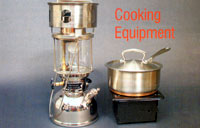

Matthew Stallbaumer
Left: Petromax BriteLyt lantern . This sturdy lantern ($100) works as a stove with the optional burner attachment and is safe for indoor use when used with isopropyl alcohol for fuel. Available from (727) 856-9245 or www.britelyt.com . Right: Coghlan's Flat-Fold Stove (pan not included). Unfolds to a compact 7-by-7-inch-by-4-inch metal stand ($7) and uses canned candles or canned sterno-type fuel. Available from (800) 999-1863 or www.emergencyessentials.com .